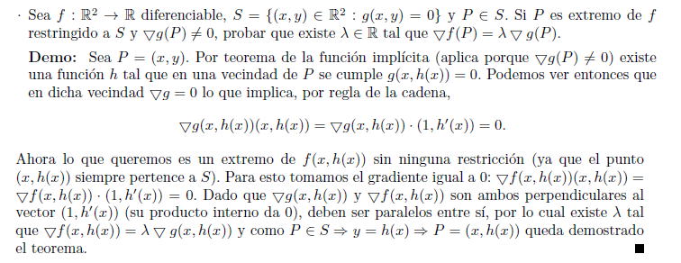

🏠 Home
📋 Índice
Teoremas para el final de Análisis II
¡Hola! Este es un compilado de los
19 teoremas en general tomados en los finales de Análisis II (c), basado en las dos listas de teoremas que circulan por ahí. Intento que sea lo más comprensible y completo posible, pero no puedo hacerme responsable si algún teorema no presente acá es tomado en un final. No debiera pasar, pero quién sabe. Desde ya, espero que a quien esté leyendo esto le sirva de algo. Si llegase a encontrar un error, favor de contactarse conmigo por alguno de los medios explicitados en el
home de este sitio. La mayoría de las demostraciones aquí presentes fueron tomadas del
Cálculo de Larotonda o de apuntes tomados en clase.
Sugerencia: Todas las demostraciones del sitio fueron escritas con
Gallemathic. A mí me ayudó un montón a la hora de estudiar estos teoremas y escribirlos y escribirlos y escribirlos hasta saberlos de memoria, así que si les da fiaca andar escribiendo a mano o por un medio más tradicional, denle una oportunidad
(shameless plug).
Descargas: Antes esta página podía descargarse como PDF. Ahora mismo habría que imprimirla a un PDF y subirlo, pero no estoy logrando que lo haga bien y el viejo estaba muy desactualizado. En los próximos días iré subiendo una versión nueva (13/9/18).
Nota: El presente sitio se encuentra constantemente en desarrollo, es posible que algunos teoremas tengan detalles de estilo de los cuales otros carezcan. A su debido tiempo iré mejorando todo para que la lectura y comprensión de los temas sea más amena.
Novedades
14 de agosto del 2018:
Comencé a pasar los teoremas a un nuevo formato. La página también está cambiando, así que si llegan a ver algo que todavía está sin cambiar, no se alarmen. Pronto va a ponerse como el resto del contenido.
Índice
Teorema 1
🔸 Dificultad: 🔴🔴⚫️⚫️⚫️
🔸 Sea f: A ⊆ ℝⁿ → ℝᵐ, P ∈ A⁰, L ∈ ℝᵐ. Entonces vale que: (f es continua en P) ⇔ (∀ sucesión Tn (n ∈ ℕ) de puntos de A ⁄ Tn → P, f(Tn) → f(P)).
Teorema 2
🔸 Dificultad: 🔴🔴⚫️⚫️⚫️
🔸
Teorema de Bolzano: sea f: A ⊆ ℝ → ℝ una función continua. Si existen puntos P ∈ A y Q ∈ A tales que f(P)f(Q) < 0, entonces existe un punto c ∈ A ⁄ f(c) = 0.
Teorema 3
🔸 Dificultad: 🔴⚫️⚫️⚫️⚫️
🔸
Teorema de Bolzano en ℝⁿ: sea f: A ⊆ ℝⁿ → ℝ, con A arcoconexo y f continua en A. Si existen P y Q ∈ A ⁄ f(P)f(Q) < 0, entonces existe R ∈ A ⁄ f(R) = 0.
Teorema 4
🔸 Dificultad: 🔴🔴🔴⚫️⚫️
🔸
Teorema de Weierstrass: sea f: A ⊆ ℝⁿ → ℝ, con A compacto, f continua en A. Entonces existen m y M ∈ ℝ tales que m ≤ f(x) ≤ M ∀ x ∈ A. Además existen Pm y PM ∈ A tales que f alcanza su mínimo y máximo respectivos en A en dichos puntos.
Teorema 5
🔸 Dificultad: 🔴⚫️⚫️⚫️⚫️
🔸
Diferenciable ⇒ Continua: sea f: A ⊆ ℝⁿ → ℝ, P ∈ A⁰, y f diferenciable en P. Entonces f es continua en P.
Teorema 6
🔸 Dificultad: 🔴🔴🔴⚫️⚫️
🔸
Sobre la existencia de las derivadas direccionales y la unicidad del diferencial: sea f:A ⊆ ℝⁿ → ℝ. Sea p ∈ A⁰. Si existe una transformación lineal Tp tal que lim x → p ‖f(x) − f(p) − Tp(x − p)‖ ⁄ ‖x − p‖ = 0, entonces existen todas las derivadas direccionales de f en p, y su fórmula es Tp(v), con v un versor de Rⁿ; Tp(X) = Dfp(X) = <∇f(p), X> para todo X ∈ ℝⁿ y f es diferenciable en P; y la transformación lineal Tp es única.
Teorema 7
🔸 Dificultad: 🔴⚫️⚫️⚫️⚫️
🔸
∇f(p) es la dirección de máximo crecimiento de f en p: sea f una función diferenciable en p. Entonces la dirección de máximo crecimiento de f en p viene dada por ∇f(p).
Teorema 8
🔸 Dificultad: 🔴🔴🔴⚫️⚫️
🔸 Teoremas de
Fermat,
Rolle,
Lagrange y
Cauchy en ℝ.
Teorema 9
🔸 Dificultad: 🔴🔴⚫️⚫️⚫️
🔸
C¹ ⇒ Diferenciable: En formato imagen.
Teorema 10
🔸 Dificultad: 🔴🔴🔴🔴⚫️
🔸
Teorema del Hessiano: Sea f: A ⊆ ℝⁿ → ℝ, f una función de clase C³ en A, con A abierto, P ∈ A un punto de A tal que ∇f(P) = 0. Entonces si el Hessiano de f en P (Hf(P)) es definido negativo, P es un máximo estricto de f. Si Hf(P) es definido positivo, P es un mínimo estricto de f. Si Hf(P) es indefinido, entonces P es un punto silla de f.
Teorema 11
🔸 Dificultad: 🔴🔴🔴🔴🔴
🔸
Teorema de los multiplicadores de Lagrange: En formato imagen.
Teorema 12
🔸 Dificultad: 🔴🔴🔴⚫️⚫️
🔸
Continua ⇒ Integrable: En formato imagen.
Teorema 13
🔸 Dificultad: 🔴🔴🔴🔴⚫️
🔸
Teorema fundamental del cálculo integral: Sea f:[a,b]→ℝ una función continua. Dado x∈[a,b] sea F:[a,b]→ℝ tal que F(x)=∫[a,x]f=∫[a,x]f(t)dt. Entonces F es continua en [a,b], derivable en (a,b) y ∀x∈[a,b] vale que F'(x)=f(x).
Teorema 14
🔸 Dificultad: 🔴⚫️⚫️⚫️⚫️
🔸
Regla de Barrow: sea f una función continua en un cerrado [a, b]. Si F es una primitiva de f, se tiene que ∫[a, b]f = F(b) − F(a).
Teorema 15
🔸 Dificultad: 🔴⚫️⚫️⚫️⚫️
🔸
Teorema del valor medio integral: sea f: [a, b] → ℝ una función continua. Entonces ∃ c ∈ (a, b) ⁄ ∫[a, b]f = f(c)(b − a).
Teorema 16
🔸 Dificultad: 🔴🔴⚫️⚫️⚫️
🔸 Dado P en una curva de nivel de F(x, y) de clase C¹ tal que ∇F(P)≠0, entonces ∇F(P) es perpendicular a la recta tangente a la curva en P. En formato imagen.
Teorema 17
🔸 Dificultad: 🔴🔴🔴🔴🔴
🔸
Las derivadas cruzadas coinciden.
Teorema 18
🔸 Dificultad: 🔴🔴⚫️⚫️⚫️
🔸
Teorema de Lagrange en ℝⁿ o Teorema del valor medio para funciones diferenciables: En formato imagen.
Teorema 19
🔸 Dificultad: 🔴🔴⚫️⚫️⚫️
🔸
Teorema de Fermat en ℝⁿ: En formato imagen.
Teorema 1
Sean:
Entonces vale que:
- (f es continua en P) ⇔ (∀ sucesión Tn (n ∈ ℕ) de puntos de A tal que Tn → P, se cumple que f(Tn) → f(P))
Demostración:
(1 ⇒ 2)
- Si f es continua en P, entonces vale que ∀ ε > 0 ∃ δ > 0 ⁄ ‖x − P‖ < δ ⇒ ‖f(x) − f(P)‖ < ε, es decir que puedo hacer la distancia de f(x) a f(P) tan chica como yo quiera acercando x a P.
- Sea Tn una sucesión de puntos de A, con n ∈ ℕ tal que Tn → P.
- Esto implica que existe un nₒ a partir del cual Tn está suficientemente cerca de P.
- Es decir, ∀ ε' > 0 ∃ nₒ ∈ ℕ ⁄ n > nₒ ⇒ ‖Tn − P‖ < ε'.
- Ahora, que f sea continua implica que puedo tomar cualquier ε y para ese ε existir un δ.
- Que Tn → P implica que siempre existe un nₒ a partir del cual Tn está a una distancia ε' o menor de P.
- Usando los dos últimos puntos, si tomo δ = ε' puedo decir lo siguiente: ∀ ε > 0 ∃ δ ⁄ ‖Tn − P‖ < δ ⇒ ‖f(Tn) − f(P)‖ < ε.
(2 ⇒ 1)
- Supongamos que f no es continua en P.
- Entonces esto significa que ∃ ε > 0 ⁄ ∀ δ > 0 ∃ x ∈ A ⁄ ‖x − P‖ < δ ∧ ‖f(x) − f(P)‖ > ε.
- Ahora, como para toda sucesión Tn → P vale que f(Tn) → f(P), entonces esto significa que ∀ ε > 0 ∃ δ > 0 ⁄ (‖Tn − P‖ < δ ⇒ ‖f(Tn) − f(P)‖ < ε).
- Como f no es continua, se puede tomar una sucesión de deltas δi = (1 ⁄ i) con i ∈ ℕ, tal que (∀ δi > 0, ∃ ε' > 0 ∧ ∃ xi ∈ A) ⁄ (‖xi − P‖ < δi ∧ ‖f(xi) − f(P)‖ > ε').
- Como i → ∞ ⇒ δi → 0, y ‖xi − P‖ < δi, entonces se deduce que xi → P.
- Como xi es una sucesión de puntos de A que tiende a P, entonces necesariamente f(xi) → f(P).
- Esto significa que (∀ ε > 0 ∃ δ > 0) ⁄ (‖xi − P‖ < δ ⇒ ‖f(xi) − f(P)‖ < ε).
- Ahora, si yo tomo ε = ε' llegamos a un absurdo, pues habíamos dicho que ‖f(xi) − f(P)‖ > ε'.
- Ha de ser entonce que f es continua en P.
Como
1 ⇒
2 ∧
2 ⇒
1, entonces
1 ⇔
2, que es lo que queríamos probar. □
Teorema 2: Teorema de Bolzano
Sean:
- Sea A el intervalo [P, Q] ⊆ ℝ
- f: A → ℝ una función continua
- Dos puntos P ∈ A y Q ∈ A tales que f(P)f(Q) < 0
Entonces:
- Existe un punto c ∈ A ⁄ f(c) = 0
Demostración:
- Supongamos que f(P) > 0 y f(Q) < 0. El caso inverso es análogo.
- Sea S entonces el conjunto de los x ∈ A ⁄ f(x) > 0.
- S ≠ ∅ porque al menos P ∈ S.
- Además, S está acotado superiormente al menos por Q, por lo que tiene un supremo s (notar la diferencia entre S y s).
- Como S es cerrado y acotado, o sea que S ⊆ [P, s], puedo extraer una subsucesión creciente Sn de puntos de S que tienda al supremo.
- Sn → s. Ahora hay dos posibilidades, f(s) > 0 o f(s) = 0.
- Si f(s) > 0, entonces existe un entorno (s − ε, s + ε)∩[P, s] tal que f(x) > 0 ∀ x perteneciente a ese intervalo.
- Como s < Q, ya que f(Q) < 0, entonces puedo tomar xₒ ∈ (s, s + ε) tal que f(xₒ) > 0.
- Pero entonces xₒ ∈ S y xₒ > s, lo que es absurdo pues s es el supremo del conjunto.
- Debe ser entonces que f(s) = 0.
- Tomando c = s se demuestra el teorema. □
(Aprovecho para agredecer a Tony Luciana y a Fernando Martin por señalar y corregir errores presentes en esta demostración).
Teorema 3: Teorema de Bolzano en Rⁿ
Sean:
- A ⊆ ℝⁿ arcoconexo
- f: A ⊆ ℝⁿ → ℝ
- f continua en A
Entonces:
- Si existen P, Q ∈ A ⁄ f(P)f(Q) < 0, entonces existe R ∈ A ⁄ f(R) = 0
Demostración:
- Por ser A arcoconexo puedo definir una curva α(t):[0,1] → A ⁄ α(0) = P y α(1) = Q.
- Arcoconexo significa que dados dos puntos pertenecientes al conjunto, existe alguna curva de puntos del conjunto mediante la cual los puedo unir.
- Considero entonces una función G(t) = f∘α(t)
- G es continua por composición de continuas.
- G cumple que G(0) = f(P) y G(1) = f(Q).
- Como G es continua en [0, 1] entonces G(0)G(1) < 0.
- Partiendo del punto anterior, existe c ∈ (0, 1) ⁄ G(c) = 0 por el Teorema de Bolzano en ℝ.
- Es decir que G(c) = f∘α(c) = f(α(c)) = 0.
- Si tomamos R = α(c) se demuestra el teorema □
Teorema 4: Teorema de Weierstrass
Sean:
- A ⊆ ℝⁿ compacto
- f: A ⊆ ℝⁿ → ℝ
- f continua en A
Entonces:
- Existen m y M ∈ ℝ tales que m ≤ f(x) ≤ M ∀ x ∈ A.
- Existen Pm y PM ∈ A tales que f alcanza su mínimo y máximo respectivos en A en dichos puntos.
Demostración:
(Existencia de m y M)
- Veamos el caso de M, el de m es análogo. Supongamos que f no está acotada superiormente.
- Entonces no existe M ∈ ℝ tal que M > f(x) ∀ x ∈ A.
- Por lo tanto debe existir una sucesión de puntos An de A tal que f(An) ≥ n ∀n ∈ ℕ.
- Por ser A compacto, existe una subsucesión convergente de An que tiende a P ∈ A, sea esta subsucesión Ank.
- Por lo dicho anteriormente, se cumple que f(Ank) ≥ nk ∀ nk ∈ ℕ.
- Como f es continua en A, f es continua en el punto P.
- Se ve que es imposible que f(Ank → P) ≥ nk ∀ nk ∈ ℕ, porque que f es continua P y no diverge ni pega saltos en P, por lo que eventualmente nk será mayor a f(P).
- Por lo tanto, f debe estar acotada superiormente.
- Entonces existe M ∈ ℝ tal que M > f(x) ∀ x ∈ A.
(Pm y PM)
- Ahora quiero ver que f alcanza su máximo y su mínimo en A. Veamos el caso de PM, en donde alcanza su máximo, el otro es análogo.
- Por el punto anterior, sé que Img(f) ⊆ [m, M], por lo que tiene un supremo: s.
- Quiero ver que s es en realidad un máximo.
- Tomo una sucesión creciente de puntos de Img(f) que tienda al supremo.
- Como esta sucesión existe, puedo tomar una sucesión An de puntos de A tal que lim n → ∞ f(An) = s.
- De esta sucesión extraigo una subsucesión convergente Ank.
- Al límite de Ank lo llamo PM, de forma que lim nk → ∞ Ank = PM.
- Como A es un conjunto compacto, PM ∈ A.
- Como f es continua en PM, entonces f(PM) = lim n → ∞f(Ank) = s.
- Por lo tanto f alcanza su máximo en A.
Dicho todo esto queda demostrado el teorema. □
Teorema 5: Diferenciable ⇒ Continua
Sean:
- f: A ⊆ ℝⁿ → ℝ
- P ∈ A⁰
- f diferenciable en P
Entonces:
Demostración:
- Partimos de la siguiente obviedad: 0 ≤ ‖f(x) − f(P)‖, ∀ x ∈ A.
- ‖f(x) − f(P)‖ = ‖f(x) − f(P) − Df(P)(x − P) + Df(P)(x − P)‖
- ‖f(x) − f(P) − Df(P) + Df(P)(x − P)‖ ≤ ‖f(x) − f(P) − Df(P)(x − P)‖ + ‖Df(P)(x − P)‖
- Porque ‖a + b‖ ≤ ‖a‖ + ‖b‖ (desigualdad triangular).
- Df(P)(x − P) = <∇f(P), (x − P)> que, por desigualdad de Cauchy-Schwartz, es menor a ‖∇f(P)‖ ⋅ ‖x − P‖.
- Juntando todo lo que teníamos hasta ahora, nos queda que:
- 0 ≤ ‖f(x) − f(P)‖ = ‖f(x) − f(P) − Df(P) + Df(P)(x − P)‖
- ≤ ‖f(x) − f(P) − Df(P)(x − P)‖ + ‖Df(P)(x−P)‖
- ≤ ‖f(x) − f(P) − Df(P)(x − P)‖ + ‖∇f(P)‖ ⋅ ‖x − P‖
- Entonces 0 ≤ ‖f(x) − f(P)‖ ≤ ‖f(x) − f(P) − Df(P)(x − P)‖ + ‖∇f(P)‖ ⋅ ‖x − P‖
- Ahora, multiplicamos y dividimos al primer término por ‖x − P‖.
- Nos queda que: ‖f(x) − f(P) − Df(P)(x − P)‖ + ‖∇f(P)‖ ⋅ ‖x−P‖ = (‖f(x) − f(P) − Df(P)(x − P)‖ ⁄ ‖x − P‖) ⋅ ‖x − P‖ + ‖∇f(P)‖ ⋅ ‖x − P‖
- Si se fijan, ‖f(x)−f(P)−Df(P)(x−P)‖ ⁄ ‖x−P‖ es la definición del diferencial de f en P, por lo que tiende a 0.
- El diferencial de f en P (Df(P)) tiende a 0 cuando x → P ⇔ f es diferenciable.
- El segundo término, ‖∇f(P)‖ ⋅ ‖x − P‖, trivialmente tiende a 0 cuando x → P.
- Por lo que ambos términos tienden a 0 y suman 0.
- Por lo tanto, ‖f(x) − f(P) − Df(P)(x − P)‖ + ‖∇f(P)‖ ⋅ ‖x − P‖ tiende a 0 cuando x → P.
- Juntando todo lo que conseguimos, 0 ≤ ‖f(x) − f(P)‖ ≤ 0.
- Por lo tanto f(x) → f(P) cuando x → P.
- Esto hace que f sea continua en P.
- Llegamos a que f es continua en P, que es lo que queríamos probar. □
Teorema 6: derivadas direccionales y unicidad del diferencial
Sean:
- f: A ⊆ ℝⁿ → ℝ
- Sea p ∈ A⁰
- Tp transformación lineal tal que lim x → p (‖f(x) − f(p) − Tp(x − p)‖ ⁄ ‖x − p‖) = 0
Entonces:
- La fórmula de las derivadas direccionales de f en p es Tp(v), con v un versor de Rⁿ.
- Existen todas las derivadas direccionales de f en p.
- f es diferenciable en p.
- Tp(X) = Dfp(X) = <∇f(p), X> para todo X ∈ ℝⁿ.
- La transformación lineal Tp es única.
Demostración:
- Si ‖f(x) − f(p) − Tp(x − p)‖ ⁄ ‖x − p‖ tiende a 0 cuando x → p, entonces lo hace por cualquier curva por la que x tienda a p.
- Sea entonces x = p + tV, con V un versor de ℝⁿ.
- Entonces x → p cuando t → 0.
- Reemplazando en la ecuación de arriba me queda que lim t → 0 (‖f(p + tV) − f(p) − Tp(tV)‖ ⁄ ‖tV‖) = 0.
- Como ‖V‖ = 1, entonces eso es igual a lim t → 0 (‖f(p + tV) − f(p) − Tp(tV)‖ ⁄ |t|) = 0.
- Eso es igual a lim t → 0 |(f(p + tV) − f(p)) ⁄ t − Tp(v)| = 0.
- Puede verse entonces que (f(p + tV) − f(p)) ⁄ t = Tp(v).
- Recordemos, lim t → 0 (f(p+tV)−f(p)) ⁄ t es la definición de la derivada en dirección V de f(p).
- Por lo anterior, se deduce que Tp(V) = ∂f ⁄ ∂v(P).
- Como V puede ser cualquier versor en cualquier dirección, entonces existen todas las derivadas direccionales.
- Esto hace que f sea diferenciable en p.
- Como existen todas las derivadas direccionales para cualquier dirección V, en particular existen para cualquier dirección Ei, con Ei un versor de la base
canónica.
- Por ejemplo, en R³ los vectores de la base canónica son (1, 0, 0), (0, 1, 0) y (0, 0, 1).
- Todos los vectores de una base canónica tienen norma 1.
- En particular, entonces, existen todas las derivadas parciales de f.
- Las derivadas direccionales que van por la dirección de los vectores de la base canónica.
- Por otro lado, como una transformación lineal se determina por su valor en una
base canónica de Rⁿ, y como Tp(Ei) = ∂f ⁄ ∂Ei(p), entonces se deduce que <∇f(p), x> = Tp(x) ∀ x ∈ ℝⁿ.
- Finalmente, falta ver que esta transformación lineal es única.
- Sea Sp otra transformación lineal que cumple lo enunciado en la hipótesis.
- Entonces se deduce que ∂f ⁄ ∂v(p) = Sp(v) para cualquier versor v de ℝⁿ.
- Esto mismo aplica para versores de la base canónica y, por lo tanto, se deduce que Sp(v) = <∇f(p), v>.
- Pero <∇f(p), v> = Tp(v), por lo establecido en los puntos anteriores.
- Se deduce entonces que Tp = Sp, por lo que Tp es única. □
Teorema 7: ∇f(p) es la dirección de máximo crecimiento de f en p
Sean:
- f una función diferenciable en p.
Entonces:
- La dirección de máximo crecimiento de f en p viene dada por ∇f(p).
Demostración:
- Sea v un versor cualquiera.
- Un versor es un vector de norma unitaria.
- Entonces <∇f(p), v> ≤ |<∇f(p), v>| ≤ ‖∇f(p)‖ ⋅ ‖v‖.
- Como ‖v‖ = 1, entonces <∇f(p), v> ≤ ‖∇f(p)‖.
- Sea ahora v = ∇f(p) ⁄ ‖∇f(p)‖, que es el gradiente de f en p normalizado, un versor con la misma direción que ∇f(p).
- Entonces <∇f(p), v> = <∇f(p), ∇f(p) ⁄ ‖∇f(p)‖> = ‖∇f(p)‖² ⁄ ‖∇f(p)‖ = ‖∇f(p)‖.
- Por lo tanto ∇f(p) es la dirección de mayor crecimiento de f en p. □
Teorema 8: Fermat, Rolle, Lagrange y Cauchy
Teorema de Fermat
Sea:
- f derivable en (a, b)
- p ∈ (a, b) un extremo local de f
Entonces:
Demostración:
- Supongamos que p es un máximo local. Si fuere un mínimo la demostración es análoga.
- Por ser máximo de f, existe un entorno (p − ε, p + ε) de p tal que f(x) ≤ f(p) para cada x perteneciente a dicho entorno.
- Dicho esto, calculemos f'(p) por límites laterales.
- lim t → 0⁺ (f(p + t) − f(p)) ⁄ t ≤ 0
- lim t → 0⁻ (f(p + t) − f(p)) ⁄ t ≥ 0
- Solo puede ser entonces que lim t → 0 (f(p + t) − f(p)) ⁄ t = 0, por lo que f'(p) = 0, que es lo que queríamos probar. □
Teorema de Rolle
Sea:
- f continua en [a, b]
- f derivable en (a, b)
Entonces:
- Si f(a) = f(b), existe c ∈ (a, b) tal que f'(c) = 0.
Demostración:
- Si f es una función constante (linea recta horizontal), entonces trivialmente su derivada es 0 para todo x ∈ (a, b).
- Si f no es constante, entonces necesariamente al menos el máximo o el mínimo del interior se alcanzan en el interior, por teorema de Weierstrass.
- Esto sucede dado que f es continua en un compacto.
- Digo en el interior porque capaz el máximo o el mínimo absolutos de la función son f(a) y f(b).
- Por si hay dudas, el interior de [a, b] es (a, b).
- Sea c dicho mínimo, por teorema de Fermat f'(c) = 0, que es lo que queríamos probar □
Teorema de Lagrange
Sea:
- f continua en [a, b]
- f derivable en (a,b)
Entonces:
- Existe c ∈ (a, b) tal que f'(c) = (f(b) − f(a)) ⁄ (b − a)
Demostración:
- Consideremos la siguiente función auxiliar: g(x) = f(x) − L(x), donde L es la recta que une f(b) con f(a), de forma que L(a) = f(a) y L(b) = f(b).
- Por álgebra de continuas y derivables, g es continua en [a, b] y derivable en (a,b).
- g(a) = f(a) − L(a) = f(a) − f(a) = 0
- g(b) = f(b) − L(b) = f(b) − f(b) = 0
- Por los dos puntos anteriores, g cumple las hipótesis del teorema de Rolle.
- Entonces Rolle nos dice que existe c ∈ (a, b) tal que g'(c) = 0.
- Partiendo de la ecuación del primer punto, queremos ver que g'(c) = f'(c) − m.
- La m sale de que las rectas como L tienen la pinta p + mx.
- (L(x))' = (p + mx)' = (p)' + (mx)' = 0 + m(x)' = 0 + m = m
- Como g'(c) = 0, entonces nos queda que f'(c) = m.
- Pero m es la pendiente de la recta que une f(a) con f(b), por lo que m = (f(b) − f(a)) ⁄ (b − a).
- Reemplazando nos queda que f'(c) = (f(b) − f(a)) ⁄ (b − a), que es lo que queríamos probar. □
Teorema de Cauchy
Sea:
- f continua en [a, b]
- f derivable en (a, b)
Entonces:
- Existe c ∈ (a, b) tal que (f(b) − f(a)) ⁄ f'(c) = (g(b) − g(a)) ⁄ g'(c).
- Este es un resultado técnico más que nada.
Demostración:
- Consideremos la siguiente función:
h(x) = (f(x) − f(a))(g(b) − g(a)) − (g(x) − g(a))(f(b) − f(a)).
- Podemos observar que h(a) = 0 trivialmente.
- Podemos observar que h(b) = (f(b) − f(a))(g(b) − g(a)) − (g(b) − g(a))(f(b) − f(a)), ambos términos son el mismo, así que h(b) = 0.
- Por lo tanto, h cumple todas las hipótesis del teorema de Rolle.
- Nótese que las cualidades de continuidad y derivabilidad las adquiere por álgebra de derivables y continuas.
- De esta forma, Rolle nos asegura que existe c ∈ (a, b) ⁄ h'(c) = 0.
- Observemos ahora que h'(c) = f'(c)(g(b) − g(a)) − g'(c)(f(b) − f(a)).
- Como h'(c) = 0, entonces tengo que f'(c)(g(b) − g(a)) = g'(c)(f(b) − f(a)).
- Distribuyendo llego a que (f(b) − f(a)) ⁄ f'(c) = (g(b) − g(a)) ⁄ g'(c), que es a lo que queríamos llegar. □
Teorema 9: C¹ ⇒ Diferenciable
Teorema 10: Teorema del Hessiano
Primero, un poco de introducción:
- Los puntos donde el gradiente de f se anula son candidatos a extremos relativos, pero no tienen por qué serlo. Estos puntos se llaman "puntos críticos". Si uno de estos puntos es efectivamente un extremo, llamemos P al punto, se dice que P es un extremo "estricto" si f(P) > f(X) ∀ X en un entorno de P. Nótese que la 'estrictitud' viene dada porque hablamos de > y no de ≥.
- Dicho eso, decimos también que P es un punto silla de f si dadas dos trayectorias α y β que tiendan a P, f(α) tiene un máximo en P y f(β) tiene un mínimo en P. En ambos casos, sin embargo, ∇f(P) = 0.
Con esto visto, vamos al teorema.
Sean:
- A un conjunto abierto
- f: A ⊆ ℝⁿ → ℝ
- f de clase C³ en A
- P ∈ A un punto de A tal que ∇f(P) = 0
Entonces:
- Si el Hessiano de f en P, Hf(P), es definido negativo, P es un máximo estricto de f.
- Si Hf(P) es definido positivo, P es un mínimo estricto de f.
- Si Hf(P) es indefinido, entonces P es un punto silla de f.
Unas cosas más antes de seguir:
- Que f sea de clase C³ implica que sus derivadas primeras, segundas y terceras son continuas.
- El Hessiano es la matriz de las derivadas segundas de f.
- Que sea definido positivo implica que los determinantes de sus menores pricipales son todos positivos.
- Que sea definido negativo implica que los determinantes de sus menores principales son intercaladamente negativos y positivos, empezando por un negativo.
Demostración:
(Casos de Hessiano definido)
- Supongamos que Hf(P) es definido positivo. El caso opuesto es análogo.
- Entonces para un X suficientemente cercano a P puedo describir a f en base a su polinomio de Taylor en ℝⁿ. O sea, f(X) = f(P) + (1 ⁄ 2)<Hf(P)(X − P), (X − P)> + R(X − P).
- Nótese que el término del gradiente −derivadas primeras de f(p)− no aparece porque al ser un punto crítico es nulo.
- Dividiendo y multiplicando por ‖X − P‖² nos queda que:
f(X) = f(P) + ‖X − P‖²[(1 ⁄ 2)<Hf(P)((X − P) ⁄ ‖X − P‖), ((X − P) ⁄ ‖X − P‖)> + R(X−P) ⁄ ‖X − P‖²]
- Nota: lo que está en naranja lo usaremos varias veces dentro del teorema, es por eso que está destacado, pero es parte de la misma fórmula.
- Llamemos Qp(V) a <(1 ⁄ 2)Hf(P)(V), V>.
- Por propiedades del producto interno escalar, si ponemos el (1 ⁄ 2) afuera o adentro es indistinto. Ahora lo ponemos adentro para poder hacer un trucazo.
- Haciendo esto, nuestra expresión anterior queda así:
f(X) = f(P) + ‖X − P‖²[<(1 ⁄ 2)Hf(P)((X − P) ⁄ ‖X − P‖), ((X − P) ⁄ ‖X − P‖)> + R(X−P) ⁄ ‖X − P‖²]
- Ahora podemos reemplazar con Qp(V).
- Nos queda entonces que:
f(X) = f(P) + ‖X − P‖²[Qp((X − P) ⁄ ‖X − P‖) + R(X − P) ⁄ ‖X − P‖²]
- Nótese que el vector (X − P) ⁄ ‖X − P‖ tiene la misma dirección que (X − P) pero es de norma unitaria ("está normalizado").
- Sea S un conjunto compacto −cerrado y acotado− tal que S = {V ∈ ℝ ⁄ ‖V‖ = 1}.
- Nótese que S es una esfera n-dimensional de radio 1 centrada en el origen.
- Como Qp es una función continua definida de ℝⁿ → ℝ, entonces por el teorema de Weierstrass alcanza su mínimo en S.
- Atención que no es su mínimo absoluto de todos los valores posibles de la función, sino que toca su mínimo dentro de los valores que alcanza en S.
- Vamos a llamar a este mínimo "mp".
- Como lo alcanza, entonces existe un versor Vp tal que Qp(Vp) = mp.
- Como Vp ≠ 0 ya que ‖Vp‖ = 1, por pertenecer a S, entonces vale que mp > 0.
- Esto es así porque Hf(p) es definido positivo, y esto hace que Qp(Vp) > 0 al multiplicar.
- Como este era el mínimo que alcanza Qp en la esfera, vale que Qp ≥ mp > 0 para todo versor V.
- Por lo tanto, el Qp((X−P) ⁄ ‖X−P‖) que teníamos en nuestro polinomio de Taylor va a ser siempre mayor a 0 (recordemos que estamos consideando que Hf(P) es definido positivo).
- Cuando X → P, (R(X − P) ⁄ ‖X − P‖²) → 0 porque la diferencia entre f(X) y f(P) se achica cada vez más.
- Esto sucede porque el polinomio de Taylor centrado en P es cada vez más exacto conforme X → P.
- Juntando los dos puntos anteriores tenemos que [(1 ⁄ 2)<Hf(P)((X − P) ⁄ ‖X − P‖), ((X − P) ⁄ ‖X − P‖)> + R(X − P) ⁄ ‖X − P‖²] es siempre positivo y mayor a 0
- Por lo dicho arriba nos queda que f(X) = f(P) + ‖X − P‖²[término mayor a 0], por lo que f(X) es siempre f(P) más un poquito, lo que significa que f(P) < f(X) para todo X en un
entorno de P.
- Nótese que ‖X − P‖ > 0 porque X tiende a P pero no es igual a P.
- El caso en el que Hf(P) es definido negativo y f(P) un máximo local es análogo.
(Caso de Hessiano indefinido)
- Si Hf(P) fuera indefinido, existirían dos trayectorias W y Z tales que Qp(W) > 0 y Qp(Z)<0.
- A través de estas trayectorias f(X) es respectivamente mayor y menor a f(P), por lo que se deduce que P ha de ser un punto silla de f.
Dicho todo esto, se demuestra el teorema. □
Teorema 11: Teorema de los multiplicadores de Lagrange
A decir verdad, no entendí nunca la demostración de este teorema. Tanto es así, que me pareció que sería inapropiado resumirla y explicarla acá sin estar seguro de mis palabras. Por esto mismo, anexo una imagen de la demostración del libro de Larotonda y me limito a continuar.

(Abrir en una pestaña nueva)
Teorema 12: Continua ⇒ Integrable
Teorema 13: Teorema fundamental del cálculo integral
Nota: de acá en adelante, debido a las limitaciones de Gallemathic y html, voy a notar las integrales definidas de a hasta b de f(t)dt como ∫[a,b]f(t)dt.
Sean:
- f:[a,b]→ℝ una función continua.
- Dado x∈[a,b], sea F:[a,b]→ℝ tal que F(x) = ∫[a,x]f = ∫[a,x]f(t)dt.
Entonces:
- F es continua en [a,b], derivable en (a,b) y ∀x∈[a,b] vale que F'(x)=f(x).
Demostración:
Sea s el máximo valor que toma |f(t)| con t∈[a,b], que como f es una función continua es un número finito. Vamos a probar que F es una función continua.
- Veamos primero que F es continua en los bordes. Como F(a)=∫[a,a]f, entonces F(a)=0. Como |F(x)−F(a)|=|∫[a,x]f|≤∫[a,x]|f|=infS(|f|,P) que es el ínfimo de las sumas superiores de |f|, sobre cualquier P partición del intervalo [a,x]. Esto significa que |F(x)−F(a)|≤S(|f|,P), donde S(|f|,P) es una suma superior de |f| en una partición P, que es igual a ∑[i]Mi∆i, donde Mi es el máximo de |f| en el intervalo ∆i (juntando todos los ∆i formo P), que es menor o igual a s∑[i]∆i, donde s, como habíamos dicho, era el máximo de |f| en [a,b].
Tenemos entonces que |F(x)−F(a)|≤s∑[i]∆i. Pero s∑[i]∆i=s(x−a), entonces quedamos en que |F(x)−F(a)|≤s(x−a). Cuando x→a⁺, s(x−a)→0, con lo cual F(x)→F(a).
Podemos hacer la misma analogía con el intervalo [x,b] hasta llegar a que |F(b)−F(x)|≤s(b−x). Como s(b−x)→0 cuando x→b⁻, entonces F(x)→F(b).
Con estas dos cosas probamos que F es continua en los bordes.
- Ahora vamos a probar que F es derivable, que F'=f y que F es continua en el interior del intervalo. Para esto tomamos un punto xo∈(a,b). Sea x∈(a,b) otro punto cualquiera, calculemos lo siguiente: (F(x)−F(xo))/(x−xo).
(F(x)−F(xo))/(x−xo) = (∫[a,x]f−∫[a,xo]f)/(x−xo)=(∫[xo,x]f)/(x−xo). Si eso tiende a f(xo) cuando x→xo, esto probaría que F es derivable, que F'=f y que F es continua en el interior.
Como f es continua entre x y xo, que eran puntos de [a,b], entonces existen dos números reales, el máximo y el mínimo de f entre x y xo tales que m≤f(t)≤M ∀t entre x y xo. No pongo [x,xo] o [xo,x] porque no sabemos cuál es el mayor.
Supongamos que x>xo, total el razonamiento inverso es análogo. Se tiene lógicamente que m(x−xo)≤∫[xo,x]f≤M(x−xo). Ahora, como x≠xo, trivial, y x>xo, se tiene que x−xo>0, por lo que puedo dividir todos los términos por (x−xo) y me queda que m≤(∫[xo,x]f) ⁄ (x−xo)≤M.
Ahora,como m y M eran dos números entre x y xo, cuando x→xo⁺, m y M tienden a f(xo), porque f es continua. Por lo tanto (∫[xo,x]f) ⁄ (x−xo)→f(xo).
Como (∫[xo,x]f) ⁄ (x−xo)=(F(x)−F(xo))/(x−xo), entonces (F(x)−F(xo))/(x−xo) = f(xo) cuando x→xo⁺. Al probar el caso xo>x se comprueba que lim x→xo (F(x)−F(xo))/(x−xo)=f(xo).
Como lim x→xo (F(x)−F(xo))/(x−xo)=f(xo), se prueba que F es continua en el interior, derivable en todo el interior (y por tanto, efectivamente derivable) y F'=f, que es lo que queríamos probar. □
Teorema 14: Regla de Barrow
Sea:
- [a, b] cerrado
- f continua en [a, b]
Entonces:
- Si F es una primitiva de f, se tiene que ∫[a, b]f = F(b) − F(a).
Demostración:
- Si F es la primitiva que detalla el Teorema Fundamental del Cálculo, o sea, F(x) = ∫[a, x]f, entonces es trivial que ∫[a, b]f = F(b) − F(a).
- Si no es esa primitiva, y la primitiva es G, entonces como ambas primitivas varían, cuando mucho, en una constante, se tiene que G = F + c.
- En consecuencia de lo anterior, G(b) − G(a) = F(b) + c − F(a) − c = F(b) − F(a) = ∫[a, b]f.
- Juntando ambas cosas se tiene que para cualquier primitiva T de f, ∫[a, b]f = T(b) − T(a), que es lo que queríamos probar. □
Teorema 15: Teorema del valor medio integral
Sea:
- f: [a, b] → ℝ una función continua.
Entonces:
- ∃ c ∈ (a, b) ⁄ ∫[a, b]f = f(c)(b − a).
Demostración:
- Para demostrar este teorema solo hace falta aplicar el teorema de Lagrange en una variable a la primitiva F, tal que F(x) = ∫[a,x]f, de f.
- Es decir, F(b) = ∫[a,b]f = F(b)−F(a).
- Por Lagrange en una variable se tiene que si F: [a, b] → ℝ es continua en [a, b] y diferenciable en (a, b), entonces existe c ∈ (a, b) tal que (F(b) − F(a)) ⁄ (b − a) = F'(c).
- Si movemos un poco esto nos queda que F(b) − F(a) = F'(c)(b − a).
- Volviendo a lo anterior tenemos que F(b) = ∫[a,b]f = F(b) − F(a) = F'(c)(b − a).
- Sin embargo, como F'(c) = f(c), entonces nos queda que F(b) = f(c)(b − a).
- Eso último lo podemos reescribir como ∫[a,b]f = f(c)(b−a), que es lo que queríamos probar. □
Teorema 16: Gradiente perpendicular a la tangente
Teorema 17: Las derivadas cruzadas coinciden
Dado que este teorema no se toma nunca y su demostración es brutalmente complicada, no voy a subirlo. Si se quiere ver por cuenta propia, está en la página 109 del Cálculo de Larotonda.
Teorema 18: Teorema de Lagrange en ℝⁿ
Teorema 19: Teorema de Fermat en ℝⁿ
Martín del Río, 2017 - 2018.
Home